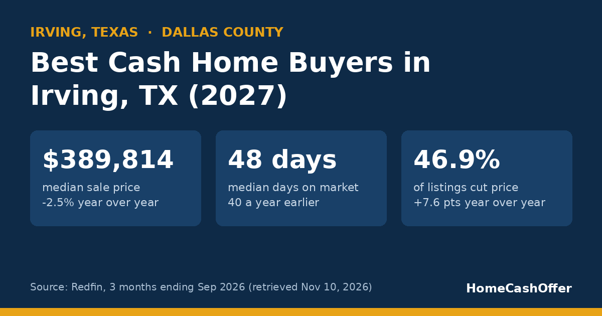

Also: Tampa FL 2027 cash buyers · Glendale AZ 2027 cash buyers · Houston inherited-house paths · Austin burst-pipe guide
Best Cash Home Buyers in Irving, TX (2027)
Short answer: Irving sellers heading into 2027 can pick from four kinds of cash buyer. There are Irving-based investors (Cash House Buyers USA says Irving is its home base), Dallas–Fort Worth investors with Irving pages (Investor Home Buyers, Callahan Home Buyers), the iBuyer Offerpad (its own service-area file lists Irving), and nationwide as-is buyers such as HomeCashOffer. Texas has no state real estate transfer tax. The lines that usually change your net are the mortgage payoff, prorated Dallas County taxes, any city code lien and the repair credit, not a deed stamp.

Irving’s market in five numbers
Redfin’s Irving housing market page covers the three months ending September 2026:
| Measure | Irving | Note |
|---|---|---|
| Median sale price | $389,814 | down 2.5% year over year |
| Median days on market | 48 | 40 a year earlier |
| Homes sold (September) | 307 | 311 a year earlier |
| Sale-to-list ratio | 96.9% | down 1.0 pt year over year |
| Listings with a price drop | 46.9% | up 7.6 pts year over year |
Redfin calls Irving somewhat competitive. The average home sells for about 4% below list and goes pending in around 52 days, and only 13.6% of homes sold above list. In plain terms, 2027 is starting as a buyer-leaning market. A move-in-ready house in Valley Ranch or Las Colinas will still sell if it’s priced right. A 1950s–70s house in south or central Irving that needs a foundation, roof or HVAC fix is the kind that sits and takes price cuts. Those are the sellers who usually call cash buyers.
How we put this list together
To be upfront: HomeCashOffer wrote this page, and we’re on the list. Nobody paid to be included. To make the list, a company’s own website or data file had to say it buys houses in Irving. We describe each one using its own claims and link out so you can check. We left out star ratings and “homes bought” counts we can’t verify. Checked November 10, 2026.
Cash buyers that list Irving
| Company | Type | What its own site says about Irving |
|---|---|---|
| HomeCashOffer | Nationwide as-is cash buyer | Makes written as-is offers on Irving houses, with no commission when you sell to us and a closing date you choose. Closes through a Texas title company. Based in Oklahoma City, not DFW. Irving page. |
| Cash House Buyers USA | Local, family-run investor | Says it’s based in Irving and has bought across Dallas–Fort Worth since 2011. Buys as-is, pays standard closing costs, charges no fees or commissions, and says most sales close in about 7 to 14 days. |
| Investor Home Buyers | DFW cash buyer | Says it has bought in Irving since 2003, makes a no-obligation cash offer within 24 hours, and can close in as little as 7 days. |
| Callahan Home Buyers | Local investor | Says it sends a written offer with the math within 24 hours and closes in 14 days as standard. It says it will sign subject to Dallas County probate and pays title, escrow and recording fees from its side. |
| Offerpad | iBuyer | Its service-area file lists Irving in the Dallas/Fort Worth market for cash offers and for listing with Offerpad, plus a free local move within 80 miles (terms apply). iBuyers mainly want newer homes in good condition and subtract repair costs after an assessment. |
Ask every buyer two questions. Will you buy the house yourself, or assign the contract? Can the written price change after your walkthrough or inspection?
Texas rules that change the net sheet
- No state transfer tax. Texas doesn’t charge a deed or documentary stamp tax. Your costs are the title company’s fees, the owner’s title policy if you’re paying it, payoffs and prorations.
- Seller’s Disclosure Notice. Most sellers of a single-family home must give the buyer the statutory notice on or before the contract’s effective date. If they don’t, the buyer can terminate for any reason within 7 days after receiving it. A fiduciary administering an estate is exempt, and so are court-ordered and foreclosure transfers (Tex. Prop. Code § 5.008(e), (f)). Heirs selling in their own names generally aren’t exempt.
- Property-tax date. Texas property taxes are delinquent if not paid before February 1 of the year after they’re imposed (Tex. Tax Code § 31.02). If you close in December or January, check whether the 2026 bill is paid or will be prorated.
- Foreclosure calendar. Texas non-judicial foreclosure sales are held between 10 a.m. and 4 p.m. on the first Tuesday of a month. A residential borrower gets at least 20 days to cure before the notice of sale, and the notice goes out at least 21 days before the sale (Tex. Prop. Code § 51.002(a), (b), (d)). If you have a sale date, put it on the first call to any buyer.
- Mortgage-rate backdrop. Freddie Mac’s PMMS put the 30-year fixed rate at 7.18% as of November 5, 2026 (15-year 6.57%). Higher rates are one reason price cuts have spread in Irving.
When an Irving seller should skip the cash buyers
- Your house is updated and in a neighborhood that’s moving, and you have time. At 96.9% of list, a well-priced agent listing may still net more after costs.
- Your home is newer and in good shape. Get an Offerpad number and an agent’s estimate side by side before you call investors.
- One repair would let a financed buyer get a loan. If a single fix (foundation, roof, HVAC) would make an FHA or conventional loan possible, it may pay for itself.
A cash sale makes more sense if the house needs work you won’t take on, tenants are staying, it’s an inherited property in Dallas County probate, taxes or a city code lien are behind, or you’re on a deadline, including a first-Tuesday foreclosure date.
How HomeCashOffer buys in Irving
Send us the address, some photos or a video walkthrough, and the date you’d like to close. We’ll send a written as-is number with no repair list and no commission. A Texas title company handles the closing. Compare our offer with the others on this page, and if someone beats it, take theirs. Call (405) 622-8705, or request an offer on our Irving, TX page. For the wider metro, see the Dallas cash-buyer comparison and our Texas seller hub. Nationwide 2027 roundup: best cash home buyers 2027.
HomeCashOffer is not a law firm and this isn’t legal advice. Talk to a licensed attorney in your state about your situation. Market figures are from Redfin’s Irving page (redfin.com/city/9410/TX/Irving/housing-market), retrieved November 10, 2026. Company descriptions are from each company’s own website or data file, checked the same day.